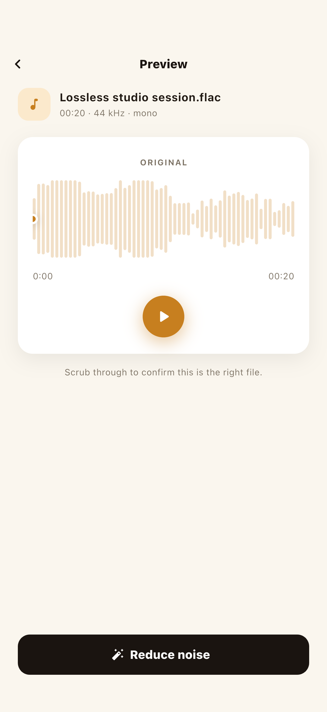

Cómo eliminar el ruido de una grabación con NoisyNo, en 5 pasos
NoisyNo funciona con un flujo sencillo: elegir un archivo → escuchar → limpiar → comparar → compartir. Elige una grabación de voz o un archivo de vídeo y procésalo sin cuenta. Aquí lo tienes, paso a paso.
Elige una grabación o un archivo de vídeo
Los archivos recientes están a mano, sin tener que rebuscar en carpetas. En la pestaña Files (Archivos), busca por nombre o elige una nota de voz, una entrevista, una reunión, una clase o un vídeo; la app solo toca el archivo que eliges. Los formatos habituales funcionan directamente (M4A, MP3, WAV, AAC, CAF, además de vídeo MP4/MOV), así que no hay nada que convertir antes.

Escucha el original
Recorre la forma de onda y reprodúcela para confirmar que es el fragmento correcto y oír qué ruido lleva mezclado: el zumbido constante de un ventilador no se comporta igual que el ruido repentino de la calle. También sirve para ajustar expectativas: una voz enterrada bajo mucho ruido mejora, pero no se rescata del todo, mientras que quitar el siseo de una voz que ya se oye clara deja un resultado cercano a una toma de estudio.

Lanza la limpieza (100 % en el dispositivo)
Toca Clean y el modelo incluido en la app reduce el ruido de fondo alrededor de la voz, sin esperas de subida, todo dentro del dispositivo y sin internet. Unos minutos de audio suelen tardar entre unos segundos y un minuto; mantén la app abierta, porque bloquear la pantalla o cambiar de app puede pausar el procesamiento.

Compara el original con el resultado
El selector Original / Cleaned cambia al instante en el mismo punto, así que puedes oír si la voz sigue sonando viva y si el ruido ha bajado de forma natural. Importa porque una eliminación agresiva puede dejar la voz fina o como bajo el agua; y si la versión limpia pierde demasiado, el original sigue intacto, porque nada aquí sobrescribe tu archivo de origen.

Guarda o comparte
Toca compartir y envía el resultado a la app que quieras: notas, mensajes, un editor de vídeo, una plataforma de podcasts o una app de transcripción. A dónde va lo decides tú. Como no hay cuenta, no hay que iniciar sesión en ningún otro sitio ni hay una biblioteca en el servidor de nadie; el archivo está donde tú lo pongas.

NoisyNo — Voice Noise Remover
Una app para quitar ruido de la voz sin conexión, que reduce el zumbido del ventilador, el siseo, el viento, el aire acondicionado y el ruido ambiente de interiores en grabaciones y en el audio de vídeos. Procesa dentro de tu teléfono, sin subir archivos.
Por qué importa no tener que subir el archivo
La mayoría de las herramientas online para quitar ruido suben tu archivo a un servidor antes de procesarlo. Pero una grabación puede contener más de lo que crees (lo que se habló en una reunión, nombres de clientes, una entrevista sin publicar), así que incluso para «quitar el ruido» la clave es dónde se procesa el archivo. Conviene empezar por una opción sin subida cuando:
- Las reuniones de empresa, las clases o las entrevistas son delicadas de compartir
- Es un borrador de vídeo o un máster de podcast sin publicar
- La conexión wifi falla: en un avión, en el metro o en un lugar de trabajo sin buena conexión
- Solo quieres limpiarla rápido, sin registro ni paso de subida
Subir y luego procesar
El archivo se envía a un sitio web o a un servidor antes de procesarse. Los archivos grandes tardan en subirse, y tienes que comprobar dónde y cómo se trata el archivo.
Se procesa dentro de tu teléfono
El procesamiento se hace en el dispositivo. Con NoisyNo, ni el archivo que eliges ni el archivo resultante se suben a un servidor de GrayForge.
Qué tipos de ruido puede reducir
La eliminación de ruido en el dispositivo funciona mejor con el ruido de fondo constante: los sonidos continuos que están debajo de la voz todo el tiempo. Ejemplos habituales que la gente limpia con NoisyNo:
- Zumbido de ventiladores y equipos informáticos: portátiles, torres, proyectores
- Aire acondicionado y climatización con su ruido sordo
- Siseo y ruido blanco: micrófonos baratos, ganancia alta
- Viento: clips grabados al aire libre y vídeos de días ventosos
- Ruido ambiente y eco: salas huecas que suenan a caja
- Zumbido eléctrico: la red eléctrica de 50/60 Hz
- Ruido de calle y de gente: tráfico, conversaciones de cafetería
- Ruido de teclado y de manipulación: tecleo, toques, golpes
Los sonidos repentinos y secos (un portazo, una tos, una notificación) son más difíciles para cualquier herramienta porque no son constantes. NoisyNo se centra en la capa constante que hace que una voz suene «con ruido», que es lo que de verdad necesitan la mayoría de las grabaciones de reuniones, entrevistas y clases.
Conviene saberlo: «no subir el archivo» y «no usar la red» no son lo mismo
Tu grabación y el archivo resultante no se suben a un servidor de GrayForge: según la política de privacidad de NoisyNo, los archivos se procesan en el dispositivo. Eso no equivale a no tocar nunca la red: pueden ejecutarse diagnósticos limitados (Firebase Crashlytics, Analytics, Remote Config) para la calidad de la app, y no incluyen nombres de archivo ni contenido de audio.
NoisyNo no sube tu grabación para procesarla, pero los datos de diagnóstico para la estabilidad no son literalmente cero. Considera el procesamiento de archivos y los datos de diagnóstico como dos ámbitos separados.
Preguntas frecuentes
¿Puedo eliminar el ruido de una grabación sin subirla a un servidor?
Sí. NoisyNo está pensada para procesar el audio de un archivo de voz o de vídeo que elijas dentro de tu teléfono. El archivo no se sube a ningún servidor de GrayForge.
¿NoisyNo funciona sin internet?
Después de instalarla, el procesamiento principal de eliminación de ruido funciona sin conexión. La instalación de la app, las actualizaciones, las funciones de la tienda y algunos diagnósticos pueden seguir dependiendo de tu red.
¿Necesito una cuenta?
No. NoisyNo no necesita cuenta ni inicio de sesión para eliminar el ruido de una grabación.
¿También puede limpiar el sonido de un archivo de vídeo?
Con los archivos de vídeo compatibles, NoisyNo puede extraer el audio, eliminar el ruido y dejarte guardar o compartir el audio resultante.
¿Qué formatos de audio y vídeo admite?
Los formatos de audio habituales, como M4A, MP3, WAV, AAC y CAF, funcionan directamente, y NoisyNo puede tomar el audio de vídeos MP4 y MOV. No hace falta convertir el archivo antes.
¿NoisyNo es gratis?
NoisyNo se descarga gratis, sin cuentas, sin anuncios y sin subir archivos, y la eliminación de ruido es gratuita. La normalización de volumen es una función Pro que se desbloquea con una compra única dentro de la app. No hay suscripción.
Que tu próxima grabación suene limpia.
Después de instalarla, limpiar tu primer archivo lleva unos tres minutos. Si algo no queda claro, te responde directamente la persona que la creó.
grayforge.dev@gmail.com